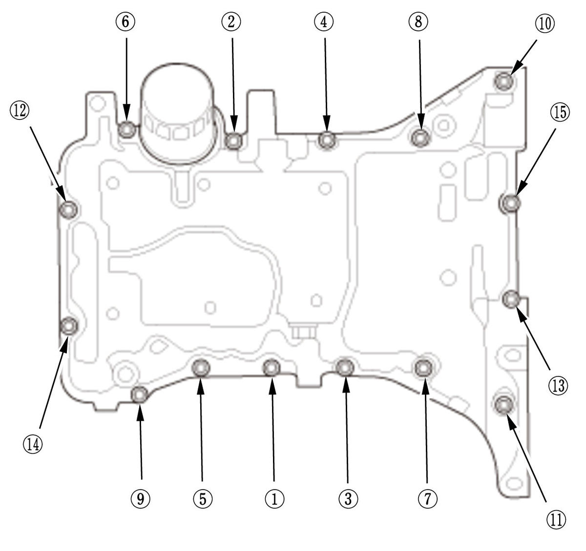
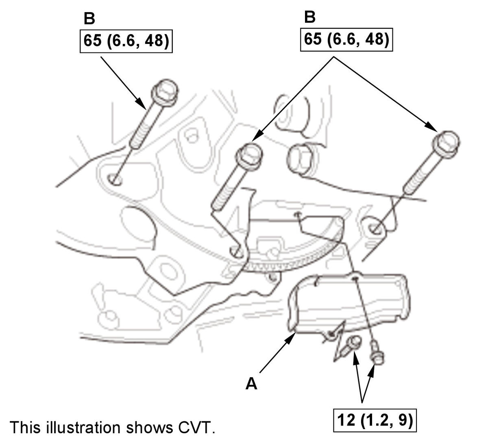

Engine Oil Pan Removal and Installation (1.5L Engine): Installation
NOTE: How to read the torque specifications.
- Oil Pan - Install
1. Apply liquid gasket to the engine block and the cam chain case mating surface of the oil pan, and to the inside edge of the threaded bolt holes. 2. Install the oil pan (A) with new O-rings (B).

Courtesy of HONDA, U.S.A., INC.3. Tighten the oil pan mounting bolts in three steps. In the final step, torque all bolts, in sequence, to the specified torque. Wipe off the excess liquid gasket on the each side of crankshaft pulley and drive plate or flywheel. Specified Torque: 12 N.m (1.2 kgf.m, 9 lbf.ft) - Intermediate Shaft Mounting Bolt - Install
- Torque Rod Bracket - Install
- Torque Rod - Install
- Torque Converter Cover/Clutch Cover - Install

Courtesy of HONDA, U.S.A., INC.1. Install the torque converter cover (CVT) or the clutch cover (M/T) (A) and the transmission mounting bolts (B). - Oil Return Hose - Connect
- A/C Compressor - Install
- TWC Bracket - Install
- Exhaust Pipe A - Install
- Front Floor Brace - Install (With Front Floor Brace)
- Drive Belt - Install
- Engine Undercover - Install
- Engine Undercover Lid - Install (With Engine Undercover Lid)
- Right Front Wheel - Install
- Engine Oil - Refill